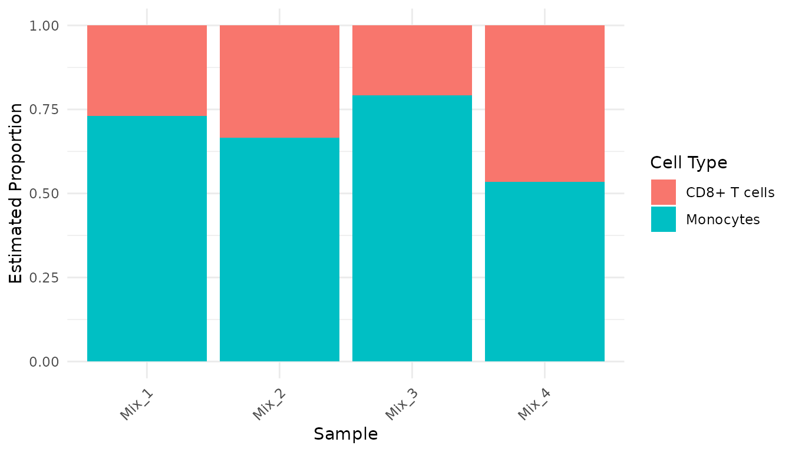

Introduction
This vignette describes a basic workflow that can be used to run the proteoDeconv package.
Example data overview
proteoDeconv includes two example datasets, which are
subsets of our dataset PXD056050:
- Pure cell type samples: Proteomic measurements from isolated CD8+ T cells and monocytes.
- Mixed samples: Proteomic data from experimental mixtures containing 50% CD8+ T cells and 50% monocytes.
Let’s load these datasets:
pure_data_file <- system.file("extdata", "pure_samples_matrix.rds", package = "proteoDeconv")
pure_samples <- readRDS(pure_data_file)
mix_data_file <- system.file("extdata", "mixed_samples_matrix.rds", package = "proteoDeconv")
mixed_samples <- readRDS(mix_data_file)Let’s examine the structure of the pure samples data:
dim(pure_samples)
#> [1] 3317 8
head(pure_samples)
#> CD8+ T cells_1 CD8+ T cells_2 CD8+ T cells_3
#> IGKV3-15;IGKV3-7;IGKV3D-7 NA 799607 158030.0
#> IGLV3-16;IGLV3-25;IGLV3-27 NA NA NA
#> IGKV3-11;IGKV3D-11 NA 230449 41679.4
#> IGHV3OR16-9 NA 151730 41122.8
#> GATD3;GATD3B 2297760 2768020 3160440.0
#> IGKV1-13;IGKV1D-13 NA NA NA
#> CD8+ T cells_5 Monocytes_1 Monocytes_2 Monocytes_3
#> IGKV3-15;IGKV3-7;IGKV3D-7 477644 213180 NA 149232
#> IGLV3-16;IGLV3-25;IGLV3-27 NA NA NA NA
#> IGKV3-11;IGKV3D-11 150046 NA NA NA
#> IGHV3OR16-9 NA NA NA NA
#> GATD3;GATD3B 2765990 1864430 1859990 1653820
#> IGKV1-13;IGKV1D-13 NA NA NA NA
#> Monocytes_4
#> IGKV3-15;IGKV3-7;IGKV3D-7 NA
#> IGLV3-16;IGLV3-25;IGLV3-27 NA
#> IGKV3-11;IGKV3D-11 NA
#> IGHV3OR16-9 NA
#> GATD3;GATD3B 1906570
#> IGKV1-13;IGKV1D-13 NAThe data matrix contains protein measurements (rows) across different samples (columns). The sample names indicate the cell type (CD8 for CD8+ T cells and Mono for monocytes).
Data preprocessing
Proper preprocessing is important for accurate deconvolution. The
preprocessing pipeline in proteoDeconv includes several
important steps:
pure_samples_preprocessed <- pure_samples |>
# Extract first gene group when multiple gene groups are present
extract_identifiers() |>
# Update gene symbols to current HGNC nomenclature
update_gene_symbols() |>
# Handle missing values by imputing with the lowest observed value
handle_missing_values() |>
# Resolve duplicate genes by keeping the row with highest median value
handle_duplicates() |>
# Scale the data (TPM-like normalization)
convert_to_tpm()
# Apply the same preprocessing to mixed samples
mixed_samples_preprocessed <- mixed_samples |>
extract_identifiers() |>
update_gene_symbols() |>
handle_missing_values() |>
handle_duplicates() |>
convert_to_tpm()Let’s examine the preprocessed data:
head(pure_samples_preprocessed)
#> CD8+ T cells_1 CD8+ T cells_2 CD8+ T cells_3 CD8+ T cells_5
#> IGKV3-15 0.08027906 19.66485501 8.2758047 22.9537904
#> IGLV3-16 0.08027906 0.06133261 0.1306014 0.1198471
#> IGKV3-11 0.08027906 5.66746686 2.1826905 7.2106515
#> IGHV3OR16-9 0.08027906 3.73151867 2.1535421 0.1198471
#> GATD3 73.96557868 68.07433147 165.5077151 132.9231702
#> IGKV1-13 0.08027906 0.06133261 0.1306014 0.1198471
#> Monocytes_1 Monocytes_2 Monocytes_3 Monocytes_4
#> IGKV3-15 13.462733 0.1468999 9.8914941 0.1450565
#> IGLV3-16 0.157494 0.1468999 0.1653017 0.1450565
#> IGKV3-11 0.157494 0.1468999 0.1653017 0.1450565
#> IGHV3OR16-9 0.157494 0.1468999 0.1653017 0.1450565
#> GATD3 117.742395 109.5607297 109.6195913 110.8951904
#> IGKV1-13 0.157494 0.1468999 0.1653017 0.1450565Preprocessing options
proteoDeconv offers several options for each
preprocessing step, which have been evaluated for their impact on
deconvolution performance. For further information on the options,
please refer to the function
reference.
Creating a signature matrix
A signature matrix contains cell type-specific marker proteins that will be used for the deconvolution. Signature matrices represent the reference profiles of pure cell populations.
To create one, we first need to establish which samples correspond to which cell types:
mapping_rules <- list(
"CD8+ T cells" = "CD8", # Samples containing "CD8" will be classified as CD8+ T cells
"Monocytes" = "Mono" # Samples containing "Mono" will be classified as Monocytes
)
phenoclasses <- create_phenoclasses(
pure_samples_preprocessed,
mapping_rules,
verbose = TRUE
)
#> Using regex-based mapping rules
#> Mapping to 'CD8+ T cells': CD8+ T cells_1, CD8+ T cells_2, CD8+ T cells_3, CD8+ T cells_5
#> Mapping to 'Monocytes': Monocytes_1, Monocytes_2, Monocytes_3, Monocytes_4
head(phenoclasses)
#> # A tibble: 2 × 9
#> cell_type `CD8+ T cells_1` `CD8+ T cells_2` `CD8+ T cells_3` `CD8+ T cells_5`
#> <chr> <dbl> <dbl> <dbl> <dbl>
#> 1 CD8+ T ce… 1 1 1 1
#> 2 Monocytes 2 2 2 2
#> # ℹ 4 more variables: Monocytes_1 <dbl>, Monocytes_2 <dbl>, Monocytes_3 <dbl>,
#> # Monocytes_4 <dbl>The phenoclasses matrix shows which cell type each sample represents, which is required for the signature matrix generation.
Now, we can create the signature matrix using CIBERSORTx:
# Note: This requires a CIBERSORTx token to be set in .Renviron
signature_matrix <- create_signature_matrix(
refsample = pure_samples_preprocessed,
phenoclasses = phenoclasses,
g_min = 200,
g_max = 400,
q_value = 0.01
)Let’s examine the signature matrix:
dim(signature_matrix)
#> [1] 426 2
# Look at the first rows
head(signature_matrix)
#> CD8+ T cells Monocytes
#> ABCB6 77.6657360 353.951727
#> ABI3 34.3210650 0.152197
#> ABLIM1 12.5659965 0.152197
#> ACAA1 0.1000631 3.507357
#> ACADVL 55.3678625 222.706106
#> ACSL3 2.3622472 14.178111The signature matrix contains proteins (rows) with their expression values in each cell type (columns). These proteins were selected based on their ability to differentiate between CD8+ T cells and monocytes.
Performing deconvolution
Now we can deconvolute our mixed samples to estimate their cell type
composition. The proteoDeconv package supports multiple
algorithms that have been evaluated for their performance with
proteomics data. We’ll use the EPIC algorithm here (Racle et al. 2017):
results <- deconvolute(
algorithm = "epic",
data = mixed_samples_preprocessed,
signature = signature_matrix,
with_other_cells = FALSE # No need to calculate other cells in this case
)
print(results)
#> CD8+ T cells Monocytes
#> Mix_1 0.2691316 0.7308684
#> Mix_2 0.3341222 0.6658778
#> Mix_3 0.2074690 0.7925310
#> Mix_4 0.4650601 0.5349399The results show the estimated proportion of each cell type in each mixed sample.
Available deconvolution algorithms
proteoDeconv supports multiple deconvolution
algorithms:
- EPIC (Racle et al. 2017): A reference-based method that uses constrained least-squares regression
- CIBERSORT (Newman et al. 2015): One of the first widely-used deconvolution tools, uses support vector regression (requires downloading the CIBERSORT.R script from the CIBERSORT website)
- CIBERSORTx (Newman et al. 2019): An enhanced version of CIBERSORT that includes batch correction features (requires a token and Docker)
- BayesDeBulk (Petralia et al. 2023): A Bayesian approach specifically designed for proteomics deconvolution
To use a different algorithm, simply change the
algorithm parameter:
# Example using a different algorithm
results_cibersort <- deconvolute(
algorithm = "cibersort",
data = mixed_samples_preprocessed,
signature = signature_matrix
)Formatting and visualizing results
For easier visualization, let’s convert the results to a tidy format:
results_tidy <- as_tibble(results, rownames = "sample") |>
pivot_longer(
cols = -sample,
names_to = "cell_type",
values_to = "cell_fraction"
)
head(results_tidy)
#> # A tibble: 6 × 3
#> sample cell_type cell_fraction
#> <chr> <chr> <dbl>
#> 1 Mix_1 CD8+ T cells 0.269
#> 2 Mix_1 Monocytes 0.731
#> 3 Mix_2 CD8+ T cells 0.334
#> 4 Mix_2 Monocytes 0.666
#> 5 Mix_3 CD8+ T cells 0.207
#> 6 Mix_3 Monocytes 0.793Now, let’s create a bar chart to visualize the cell type proportions:
ggplot(results_tidy, aes(x = sample, y = cell_fraction, fill = cell_type)) +
geom_bar(stat = "identity", position = "stack") +
theme_minimal() +
theme(axis.text.x = element_text(angle = 45, hjust = 1)) +
labs(
x = "Sample",
y = "Estimated Proportion",
fill = "Cell Type"
)
Conclusion
This vignette demonstrated the basic workflow for proteomics
deconvolution using the proteoDeconv package:
- Load and preprocess your data
- Create a cell type signature matrix
- Perform deconvolution on mixed samples
- Visualize and interpret the results
For more advanced usage, refer to the package documentation and function reference.